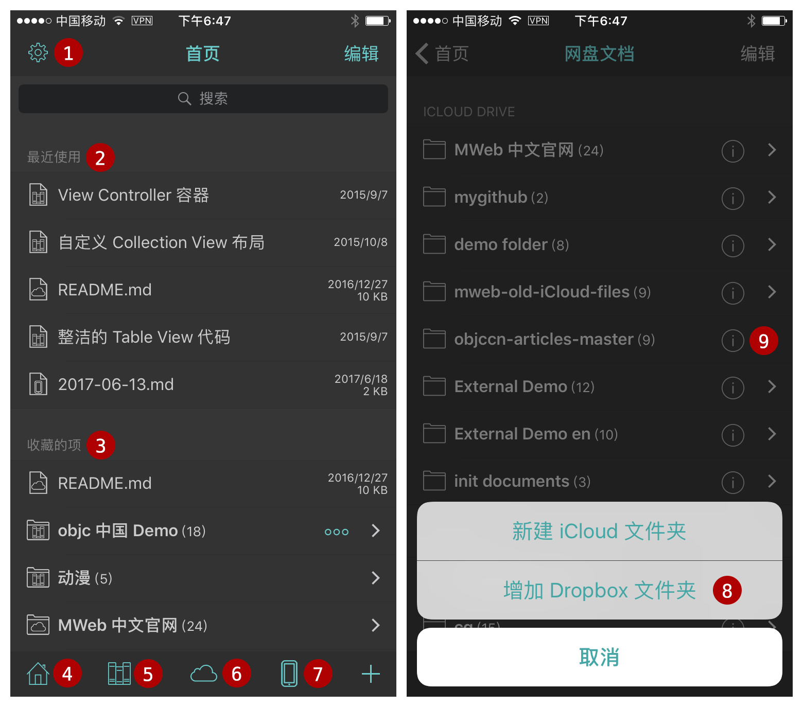

iOS 版 MWeb 正式发布及简介
MWeb 首先是一个 Markdown 编辑器，所使用的 Markdown 语法为 Github Flavored Markdown，简称 GFM，这是一种最为广泛使用的 Markdown 语法之一。如果你不知道什么是 Markdown，建议看一下 Markdown 語法官方說明繁體中文版。GFM 除了支持官方的语法外，还扩展了不少语法，具体情况会在本文后说明。这里先介绍一下 iOS 版 MWeb 的基本使用方法。
MWeb for iOS 基本使用

上图左图为首页，右图为网盘文档，各种标记如下：
- 设置页面。
- 最近使用的文档。
- 收藏的项目，文档，文件夹，文档库分类等等都可以收藏。
- 回首页按钮。
- 文档库按钮，目前的版本的文档库是需要 MWeb for Mac 配合使用的，不是单独的功能，默认不启用。
- 网盘文档按钮，点击后会转到右图的网盘文档，目前支持 iCloud Drive 和 Dropbox。
- 本地文档按钮。
- 进入网盘文档后，点右下角的按钮可增加 Dropbox 文件夹以同步。
- 文件夹设置按钮，网盘文档内的文件夹有 (i) 按钮的都可以设置，主要是设置新建文档的默认扩展名、插入图片保存位置和是否自动上传至图床，这个设置和 Mac 版 MWeb 外部模式中引入的文件夹的设置一样。如下图。
上图左图为文件夹设置画面，右图为点进文件夹后的画面，各标记说明如下：
- 设置此文件夹内的文档的默认排序，新建文档的默认扩展名等。
- 插入图片时图片的保存位置，默认保存在文档所在位置的 media 文件夹内，你可以通过填入文件夹名来修改（上图改为 images）。另外保存路径这个很重要，默认是“相对位置”，也就是保存在文档所在位置的文件夹内。如果设置为“绝对位置”，比如 folder/sub/sub2/sub3/doc.md 这个位置的文档插入图片，会保存在 fodler/media 下，而“相对位置”，则会保存在 folder/sub/sub2/sub3/media 下。
- 插入图片时自动上传至图床：如果启用，则插入图片时，会直接上传至图床。在设置页面可以配置图床信息，目前支持 Google Photos、imgur、七牛和自定义图床。
- 回首页按钮。
- 收藏按钮。
- 排序方式按钮，点击可更改排序方式。
- 新增文件夹和文件按钮。
上图左图为打开文档后点击大纲视图的画面，右图为编辑时，切换到 Markdown 键盘的画面
- 文档大纲按钮，点击后可快速导航。
- 收藏按钮。
- 预览按钮。
- 新增文档按钮，会在所打开的文档的文件夹内新增文档。
- 分享按钮，可导出为 HTML、图片、PDF；发布至 Wordpress、Wordpress.com、Metaweblog API 、Evernote、Blogger 和 Medium。
- Markdown 常用语法的快速输入键盘。
- 编辑器样式和预览样式切换。
上图左图为点击分享按钮后的画面，右图为切换样式画面
- 退出编辑，也可左滑。
- 发布服务，要在设置页面新增发布服务，支持 Wordpress、Wordpress.com、Metaweblog API 、Evernote、Blogger 和 Medium。
- 切换样式。
配置 MWeb for Mac 文档库
iOS 版的文档库目前不可单独使用，只做为 Mac 版文档库的辅助，目前仅支持查看、编辑和新增文档，删除和归类等等功能目前都不支持。要使用 iOS 版文档库，首先要把 Mac 版的 MWeb 的文档库保存到 iCloud Drive 或者 Dropbox 中，等同步完成后，再在 iOS 版 MWeb 中配置文档库的位置。
如上图，用另存为按钮，把文档库保存在 Dropbox 或 iCloud Drive 中，如果选择保存在 iCloud Drive，必须保存在 iCloud Drive 中 MWeb 所属的文件夹内。如果在 Mac 的 iCloud Drive 中看不到 MWeb 所属文件夹，可以试试在 iOS 的 系统设置 - iCloud - 关闭 iCloud Drive，然后再重新打开。
设置好并且文档库完全同步后，在 iOS 版 MWeb 中配置 Mac 版文档库的方法如下图：
- 首先是启用 MWeb for Mac 的文档库。
- 点击“更改文档库位置”按钮，选择文档库的位置。文档库位置的文件夹内，必然会有一个名为 mainlib.db 的文件和一个 docs 文件夹。
- 设置完后，点完成，回到首页，再点首页底部的“文档库”按钮，即可进入文档库，如上图右图。
使用 iOS 版文档库要注意的地方为：在 iOS 文档库新增的文档总是在“所有文档”和“未分类文档”中。
其它参考：
- iOS 版 MWeb 发布到自建 Wordpress 和 Metaweblog API 使用指南
- MWeb 图片及图床使用完全指南
- iOS 版 MWeb 图床功能及七牛图床使用指南
- iOS 版 MWeb 图床功能中自定义图床的使用指南
- 在 iOS 中如何使用 MWeb for Mac 文档库
GFM 语法简介和 MWeb 所支持的扩展语法
回车转为换行
官方的语法规定结尾加 2 个以上空格加换行才会转成换行，也就是 <br /> 标签。MWeb 中有个选项可以直接把换行转成 <br />，不用加上 2 个以上空格，这个选项默认是开启的。如果要关闭，请在设置页面关闭。
任务列表（Task lists）
Markdown 语法：
- [ ] 任务一 未做任务 `- + 空格 + [ ]`
- [x] 任务二 已做任务 `- + 空格 + [x]`
效果如下：
- 任务一 未做任务
- + 空格 + [ ] - 任务二 已做任务
- + 空格 + [x]
图片大小及对齐
官方和 GFM 都不支持图片大小控制及对齐设置，MWeb 引入的特别的语法来设置图片宽度和居左、居右、居中。如： 这样表示设置图片宽度为 450。其中 -w450 为设置语法，生成 HTML 时会自动移除。w 表示设置宽度，居左为：-l400，居右为 -r400，居中为 -c400，比如设置一图片宽度为 500 并居中：。 可以看出，MWeb 引入的语法的特点是兼容原来的语法和仅支持设置宽度。
多行或者一段代码
Markdown 语法：
```js
function fancyAlert(arg) {
if(arg) {
$.facebox({div:'#foo'})
}
}
```
效果如下：
function fancyAlert(arg) {
if(arg) {
$.facebox({div:'#foo'})
}
}
这个语法目前在 MWeb 中使用，必须前后空一行，才会正确解析。我觉得，在写 Markdown 文档过程中，运用空行很有必要，基本上，块级元素（标题、列表、引用、代码块、表格、段落等），都建议前后空一行。
表格
Markdown 语法：
第一格表头 | 第二格表头
--------- | -------------
内容单元格 第一列第一格 | 内容单元格第二列第一格
内容单元格 第一列第二格 多加文字 | 内容单元格第二列第二格
效果如下：
| 第一格表头 | 第二格表头 |
|---|---|
| 内容单元格 第一列第一格 | 内容单元格第二列第一格 |
| 内容单元格 第一列第二格 多加文字 | 内容单元格第二列第二格 |
删除线
Markdown 语法：
加删除线像这样用： ~~删除这些~~
效果如下：
加删除线像这样用： 删除这些
LaTeX
Markdown 语法：
块级公式：
$$ x = \dfrac{-b \pm \sqrt{b^2 - 4ac}}{2a} $$
\\[ \frac{1}{\Bigl(\sqrt{\phi \sqrt{5}}-\phi\Bigr) e^{\frac25 \pi}} =
1+\frac{e^{-2\pi}} {1+\frac{e^{-4\pi}} {1+\frac{e^{-6\pi}}
{1+\frac{e^{-8\pi}} {1+\ldots} } } } \\]
行内公式： $\Gamma(n) = (n-1)!\quad\forall n\in\mathbb N$
效果如下（在设置页面中启用 LaTeX 才会看到效果，默认为启用）：
块级公式：
\[ x = \dfrac{-b \pm \sqrt{b^2 - 4ac}}{2a} \]
\[ \frac{1}{\Bigl(\sqrt{\phi \sqrt{5}}-\phi\Bigr) e^{\frac25 \pi}} =
1+\frac{e^{-2\pi}} {1+\frac{e^{-4\pi}} {1+\frac{e^{-6\pi}}
{1+\frac{e^{-8\pi}} {1+\ldots} } } } \]
行内公式： \(\Gamma(n) = (n-1)!\quad\forall n\in\mathbb N\)
脚注（Footnote）
Markdown 语法：
这是一个脚注：[^sample_footnote]
效果如下：
这是一个脚注：1
注释和阅读更多
注 阅读更多的功能只用在文档库生成静态网站或发布到 Wordpress 博客时，插入时注意要后空一行。
TOC
Markdown 语法：
[TOC]
效果如下：
-
这里是脚注信息 ↩